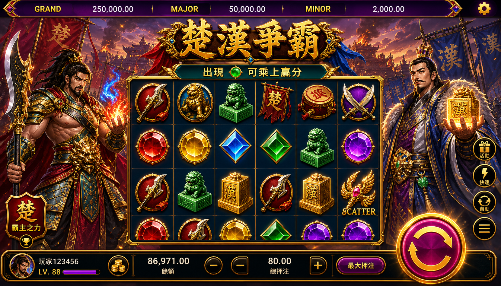
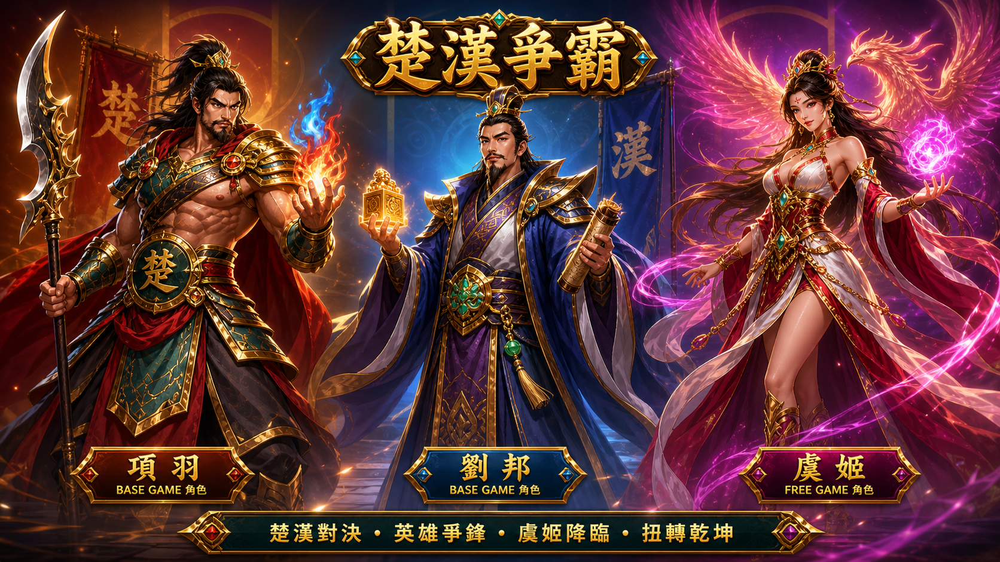
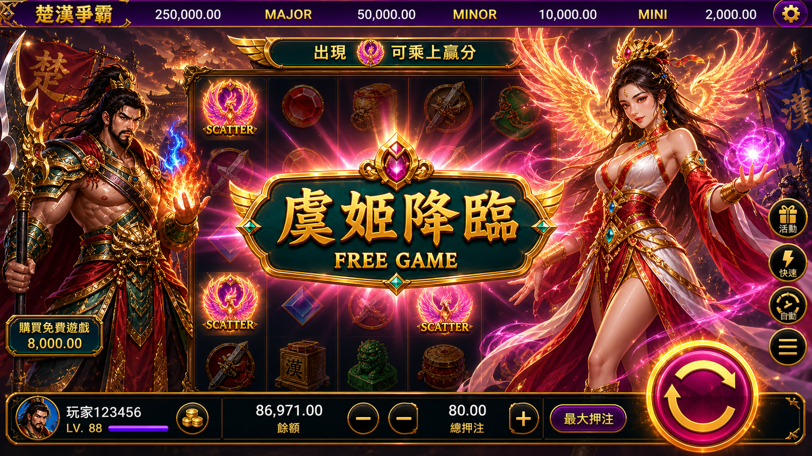
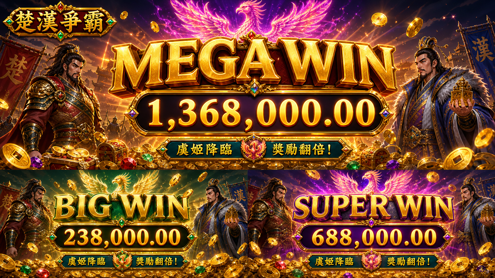
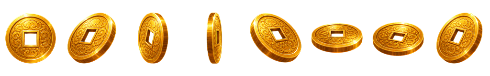
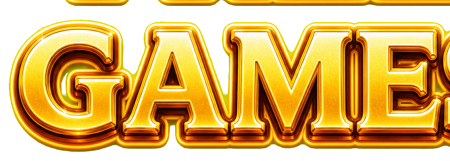
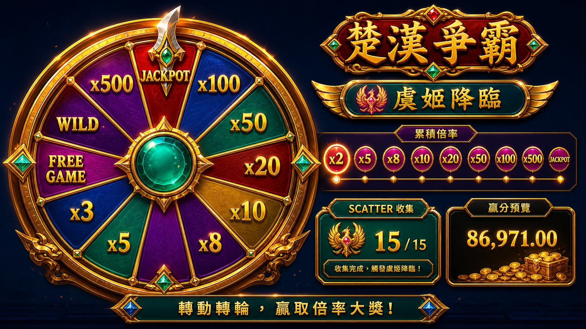
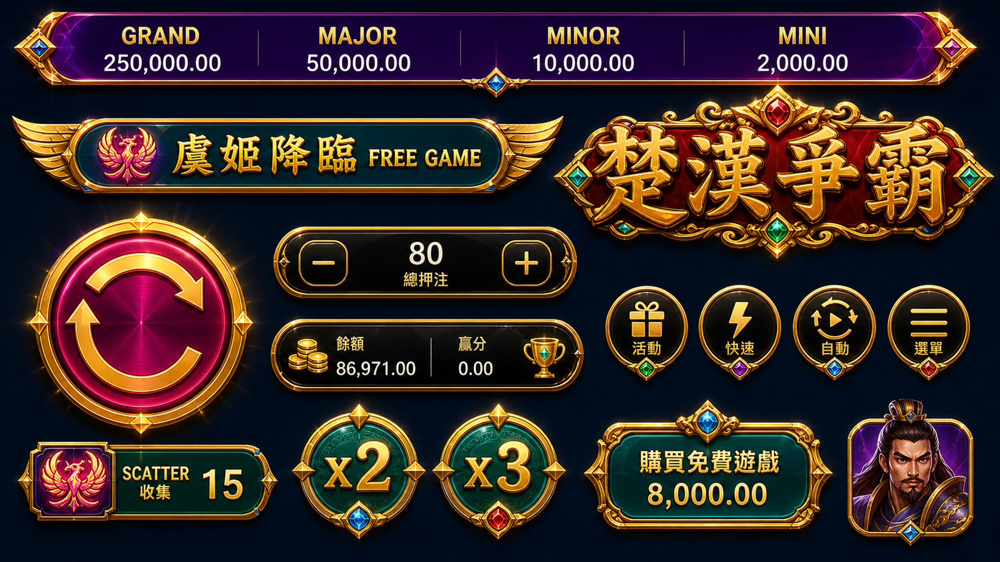

已存在
Base Game 主遊戲畫面
1660 x 948，主場景、轉輪區與整體視覺密度基準。
base-game.png
Game Art Asset Board
Phaser Preview
MainMenuScene 已改成乾淨背景加一致角色分層：背景不再使用烘好 UI 的 `開始畫面.png`，按鈕與副標題框獨立載入。
使用 `assets/bg/bg_battlefield_clean.png` 作為乾淨背景，角色沿用 Base / Free Game 相同人物素材。
Phaser Preview
Base Game 已重新接入真正分層素材：純背景、左右人物、轉軸、6x5 符號與不含中央裝飾的資訊框。每層都可用眼睛按鈕單獨 hide/show。
按 Next Layer 或每層眼睛按鈕，逐層確認實際圖檔與深度排序。
Phaser Preview
Free Game 已改成「鳳鳴九霄」模式：畫面只出現虞姬，鳳凰翅膀在虞姬後方做小幅來回展翅，左側顯示動態 15 FREE GAME，最後出現贏得獎金文字。
15 由 numbers_gold 金屬數字圖動態組成，可倒數、增加或重設；FREE / GAME 固定為同風格金屬字圖，不做縮放跳動。
Phaser Preview
爆獎畫面已拆成背景、人物、鳳凰、WIN Title、累積數字、副標題與金幣層；左上角楚漢爭霸 Logo 不顯示，副標題改為「鳳鳴九霄」。
Title 會來回閃爍縮放、鳳凰在後方展翅、獎金數字會從 0 持續累積到目標值。
目前專案根目錄內可用的畫面稿與 UI 圖，先作為美術方向與版面規格基準。

1660 x 948，主場景、轉輪區與整體視覺密度基準。
base-game.png

1672 x 941，遊戲入口與品牌第一視覺。
開始畫面.png

1672 x 941，免費遊戲觸發轉場與氛圍基準。
freeGame啟動畫面.png

1672 x 941，角色事件畫面參考，建議後續重整命名與版本。
v1-chuhan-yuji-descends-freegame.old.png

1672 x 941，大獎展示、光效層次與數字舞台參考。
爆獎畫面.png

Big / Super / Mega Win 專用背景層，不再沿用一般 Base Game battlefield 直接擺放。
assets/win/bg/win_bg_award_clean.png

使用補上的金幣圖做 128x160 spritesheet，由 Phaser 從底部往上拋灑。
assets/win/fx/coin_fx_sprites.png
從原本金屬字素材拆出的獨立 FREE 圖層，搭配動態金屬數字使用。
assets/free_game/ui/free_word_metal.png

從原本金屬字素材拆出的獨立 GAME 圖層，15 數字不再被烘在圖裡。
assets/free_game/ui/game_word_metal.png

1672 x 941，Bonus 輪盤、倍率版型與獎項展示參考。
v1-bonus-wheel-multipliers.png

1672 x 941，按鈕、面板、圖示與介面元件切圖參考。
v1-ui-components.png
先把遊戲可視素材拆成明確清單，後續每一項都應交付真實圖檔，不使用程式繪製色塊代替。
畫面稿維持接近 1672 x 941；可互動物件改用透明 PNG、spritesheet 或 atlas。命名建議統一英文小寫與用途前綴，方便 Phaser 載入。
screens/base-game.png
characters/xiang-yu_idle.png
symbols/scatter_yuji.png
ui/spin-button_normal.png